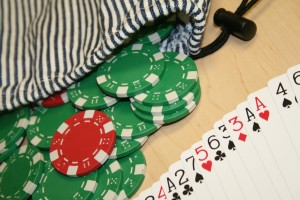

|
Red Light |
| Red Light |
Red Light is a jeopardy chip/card game by Todd Neller based on the Gamewright jeopardy card game Fowl Play which is, in turn, based on the folk jeopardy dice game Pig.
The two-player version introduced here can be played with 4 red poker chips (“red lights”), 24 green poker chips (“green lights”), and a bag or container that allows players to shuffle and randomly draw concealed chips. One can also play the game with standard playing cards using the Ace through 7 of each suit and having the 4 Aces and 24 other cards representing red and green lights, respectively.
The object of the two-player game is to be the first player to reach 50 points. The non-starting player begins with 1 point.
One a player's turn, the player draws one or more chips. If the drawn chip is a green light, the player sets it aside in a “turn total” pile. After drawing, the player then decides whether to draw again or hold. If the player holds, the number of green lights in the turn total pile are scored, the chips are placed in a discard pile, and play passes to the next player. If the drawn chip is a red light, the player scores nothing for the turn, places all chips in the discard pile, and play passes to the next player. If the red chip was the last, fourth red light, all discarded chips are returned to the bag or container and shuffled before the next turn.
Note: The number of red and green chips for Red Light was chosen by varying the number of chips in play, analyzing the game, and optimizing komi (i.e. compensation points). We found an extraordinarily good approximation of a fair game for 4 red and 24 green chips with a komi of 1, deviating from a fair win probability by 0.00001. With larger numbers of total chips, the game length shortens, and the ideal komi increases. We have opted for smaller numbers of chips (< 50) in our design because poker chips are often sold in units of 25 or 50. For more details, see the analysis in this research article:
| Red Light Race |
In the fall of 2013, Gettysburg College Computer Science 112 students (Michael Booz, John Duncan, Jeff Kohart, Edward Makinde, and Steven Semmel), Prof. Todd Neller, and Marcin Malec '13 created an Android app called "Red Light Race" for the two-player game described above.

Game play tips:
Our goal was to create a human versus computer game version with a racing theme that featured:
Optimal play of the game was computed by Todd Neller, but a memory-efficient artificial neural network that closely approximates optimal play was trained from this optimal play by Marcin Malec. Your smartphones have Marcin to thank for packing high-quality play in a low memory footprint. The total number of possible non-end-game situations in this 2-player Red Light game is 6,375,000. Marcin's neural network boils decision making down to a mere 118 numbers (i.e. about 0.002% of the memory cost) while performing within 1% of the optimal win rate.
Alternate address for this page: http://tinyurl.com/redlightrace
© 2014 Todd W. Neller